Your browser does not support the video tag.

Rack up as many lawsuits as you can.
Also available on
itch.io
.
Watch the trailer
Download for Mac
Download for Windows
PT-G3
A game by
Pedestrian Tactics